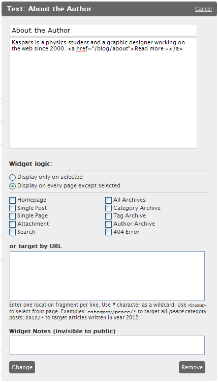

Update: the plugin was renamed to Widget Context after discovering a naming conflict with the Widget Logic plugin.
Here is a screenshot of my latest WordPress plugin that adds a bit of contextual logic to any of the existing widgets.

It is still in beta, so please leave a comment if you would like to test it out.
Update: This is now available as Widget Context plugin at the official plugin repository (you can install it through your WordPress backend).
I love this. For sure I’ll test it out. I already use a Widget Logic plugin—but this one is how it should be done. I’d even go so far as saying this should be in core.
Have you been using Drupal? This is very similar to how they handle “blocks”.
Oh yeah…. sign me up please. I second Ian’s comment about this being in the core. Widgets seem underpowered for all the press they’d received.
Great idea, will get rid of the need for the half dozen registered sidebars or loads of php normally required to control where widgets display – would love to beta test – drop me a line. Thanks!
Ian, yes — the idea is taken from Drupal as I have been using it for many years before WordPress and this widget/block logic feature is the one I missed the most in WordPress.
Kel, you are on the list. I’ll send it tomorrow.
Gareth, you are absolutely true — on this blog I am currently running only one widgetized area per sidebar. One might find it very useful for multilingual sites where you can target block placement by the language code included in the URL.
I’ll send the plugin to all of you tomorrow.
This is probably the most useful plugin I’ve seen in a long time. I love how it can target a specific page to show a widget. I would be more than happy to test out this plugin, Sign Me Up!
Woah, yes, this would make a useful feature within WP core.
Okay now somebody put this on WordPress Ideas :)
GREAT!! Pleas sign me up!
I love to beta test this very promising work.
Pleas sign me up!
(Just checking back – i think my earlier comment got akismet zapped!)
Hope this isn’t cheeky to post this here, but… I’ve got a Widget Logic plugin up at wordpress.org/extend already – won’t post the link in case that’s what zapped me – but it’s URL slug is widget-logic.
Mine still works with the basic ‘supply your own PHP’ way of doing things it started out with, but i’d always had an eye on putting in a simple tickbox ‘frontend’ like yours!
I *really* like your URL grep idea!
I’de love to test this plugin out. It definitely has core potential as Ian stated above.
Be glad to test it on my home box as I’m about to change design of all three of my blogs and this would be a great addition.
This is exactly what I am looking for. Please sign me up.
Alan, thank you for stepping by.
This is really crazy — a few weeks ago I googled around for plugin with this functionality but could’t find anything. I must have used the “context” keyword too much or something, I don’t know.
Now I had a look at your plugin and I must say that you would have saved me many hours and even days which I spent trying to figure out the way WordPress updates widgets and how to take over widget controls.
So I’ll look at the best ways to improve my code or simply append yours with the URL grep part and checkboxes. Please let me know (a quick email would probably be the best) if you would like to cooperate.
:-) and some :-( at the same time? glad to collaborate any way you see fit. i’ve been thinking of a foolproof GUI way to flip between the 2 ‘modes’ (frontend tickbox v raw PHP).
i’ve not ever tried using an URL grep using the ‘free PHP’ method, but something like
preg_match(‘@category/peace/.*@’, $_SERVER[‘REQUEST_URI’])
should do the trick. not the most obvious syntax to the WP beginner!
the way i see it in my head (without thinking about it too hard) is as the tickboxes/grep field being a friendly frontend to mechanically create the ‘raw PHP’ text. some sort of gui toggle gives access to the raw text for advanced tinkering.
the most common logic text i use are things like is_home(), or is_category() || is_single() — which would work with the tickboxes as you have it now, but i’ve also got widgets that appear on specific categories, pages and tags. the most complex code i use is
global $post; return (is_single() && InSeries::adv_CurrentSeries($post->ID));
because the inSeries widget (which is no longer supported) doesn’t have a ‘only show when actually in a series’ option. (i suggested this to the author but he couldn’t see the point, and even disputed the legitimacy of hiding widgets when not needed!)
It’s been a week since I requested inclusion in the Beta testing of this plug-in, can I assume that’s not going to happen?
Looks like Kaspars and Allan might collaborate on this – any updates? Also, I didn’t see any mention of this functionality going into WP 2.7 so I’d love to put Kaspars work into action.
marc – you could try my publicly available plugin with the same (less friendly!) functionality. it’s at wordpress.org/extend/plugins/widget-logic/
Hello Kaspars,
I really like the way you do plugins.
I’d like to try this one out as well…
Thanks a lot,
schikowski
Any progress on this plugin? I’m very interested in using it.
Give it
OMG, you’ve just read my mind! I recently found the Widget Login plugin and was getting ready to ask you if there was a way to “display on all pages except” type of thing. I can’t wait to get my hands on the new version.
When will it be out?
I have a sandbox wordpress site and would love to help test this out, if you still need beta testers.
Andrea
Hi there,
I would love to test your widget plugin out. It seems so practical!
Thanks heaps,
Aonghas
Aonghas, the download link for Widget Context is available in this post.
Cheers for that, it’s aweeeesome!
I definately want to try this out too. How can I get a copy. I’m surprised this isnt already built into WP.
Can I get a copy to test out? I have a site for which I’m looking for this exact feature.
Casey, you can get the plugin under the Projects & Services link above.
Thank you for delivering such a helpful widget.
It Fits my needs and is much easier to use than widget logic.
I’d love to try this out!
Oh I LIKE this. Would love to try it out (whenever it’s stable).
Tom, this is now available as Widget Context plugin at the official repository (search for it at your WordPress backend).